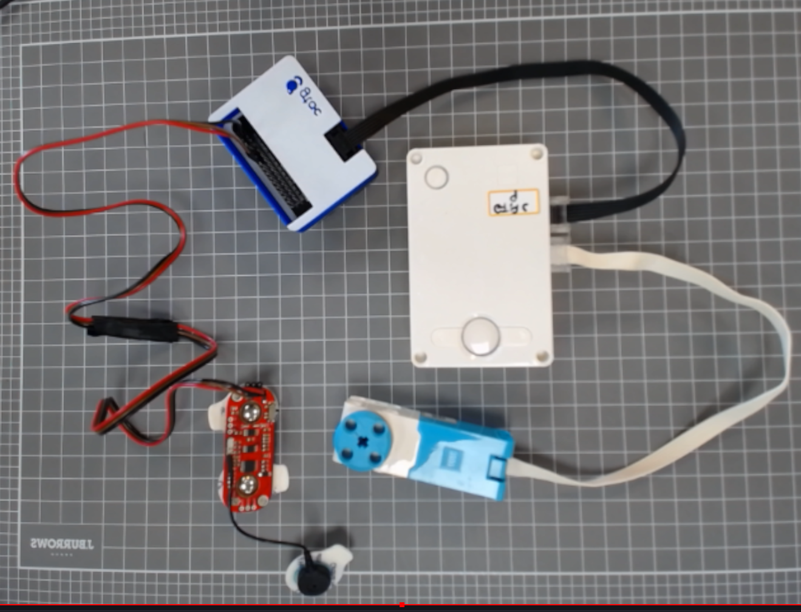
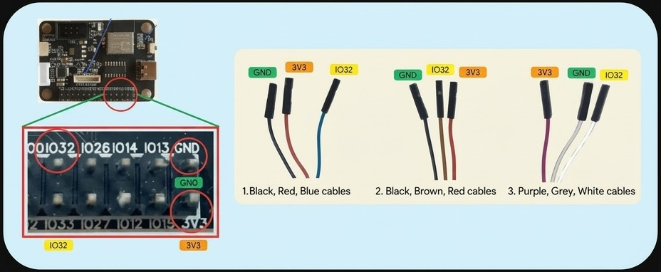
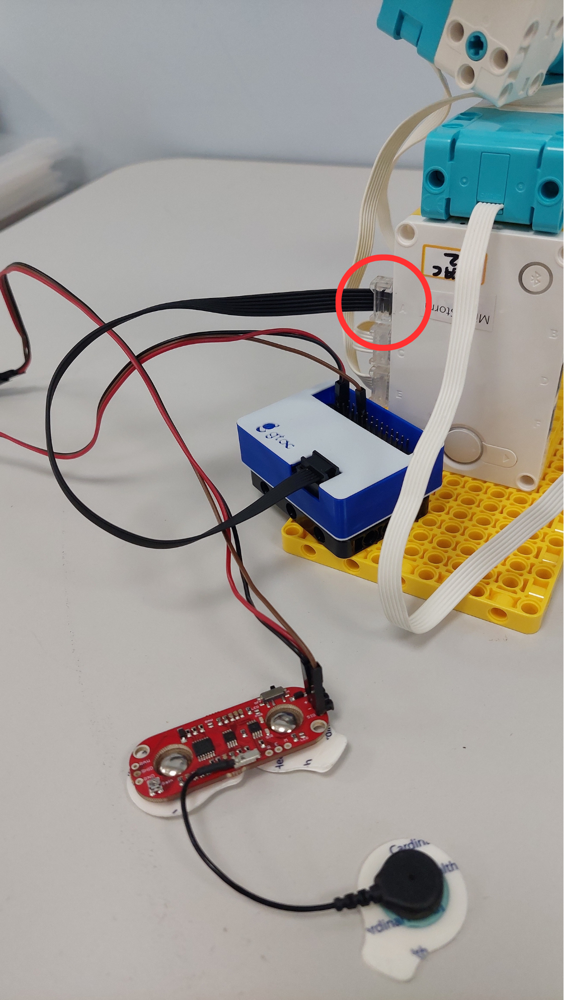
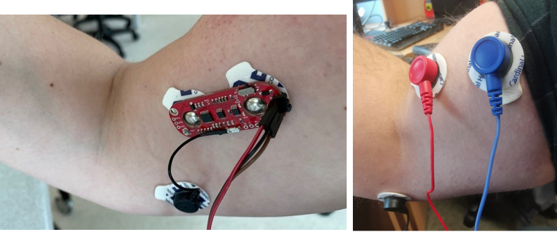
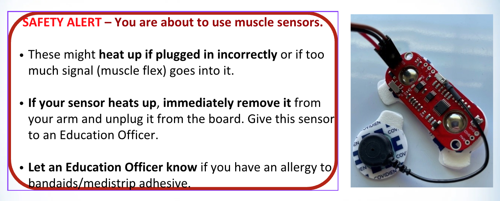

In this activity you’ll connect a muscle sensor to control your motors, then upload a code & test it. Use the buttons below to move through each step.

In this section, you will get a muscle sensor to connect with your robotic arm. Watch this short video to learn about the components you will get with the muscle sensor. The "The Myosensor" button below takes you to a PDF document that explains the muscle sensor equipment in more detail.

Connect the sensor's three cables to the board's pins IO32, GND and 3V3. Your cables may be one of three colour sets: match yours with the picture. GND and 3V3 are the pair of pins right next to the USB-C socket. IO32 is in the same row as GND, four pins further along.
Tap 1 GND, 2 3V3 and 3 IO32 to watch each plug go on. Drag the model to turn it.

Connect your myosensor's black cable to the Lego Hub.
The black cable from the myosensor box needs to connect to PORT A.
Look at the picture above to see where to plug in your myosensor.


Attach the sensor to your forearm before you start the arm program. The board measures your relaxed muscle when it starts.
Relax your arm and keep it still while the program starts. Tap the numbers under the hub to go through each step.